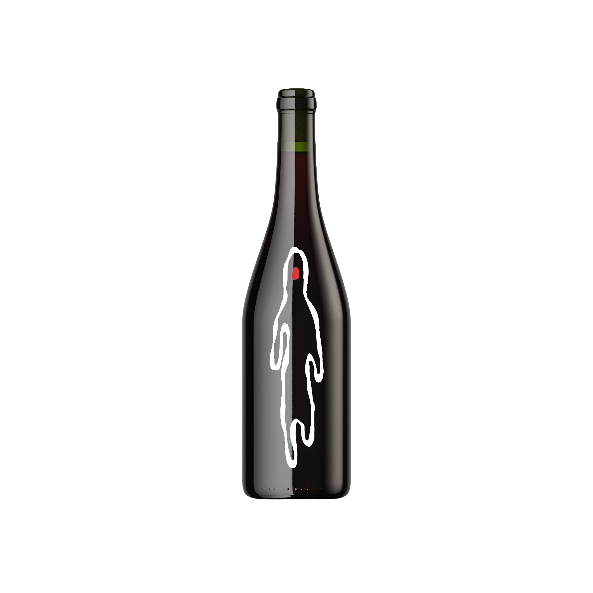

Pinot Noir
Le Pinot Noir présente une robe rouge rubis claire. Au nez, il offre des arômes de fruits rouges frais (cerise, framboise) et des notes florales. En bouche, il est léger, avec une belle acidité et des tanins fins. La finale est élégante, fruitée et légèrement épicée.
-Millésime actuel de 2022
-Premier millésime en 2003
-Cépage à base de Sérine et Noirien
-Fermentation en cuves ou fûts, macération courte, élevage en fût de 6 à 18 mois.
Viande, poisson, fromage, plats végetariens
14-16°C